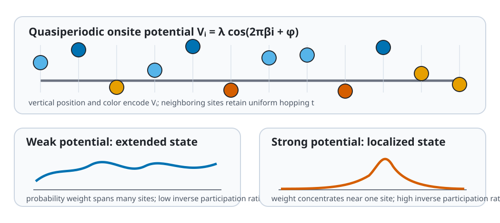

Aubry-André-Harper Chain
Purpose and structure
This quasiperiodic chain adds
$$ V_i=\lambda\cos(2\pi\beta i+\phi) $$
to the onsite terms of a tight-binding chain. Irrational $\beta$ produces quasiperiodicity and supports localization studies.

Package use
from quantum_lattice_models import aubry_andre_harper_chain
H = aubry_andre_harper_chain(
n_sites=34, hopping=1.0, potential=2.0, phase=0.0
)
Parameters
| Builder | Parameter | Type | Default | Constraint |
|---|---|---|---|---|
aubry_andre_harper_chain |
n_sites |
int |
16 |
>= 1 |
aubry_andre_harper_chain |
hopping |
float |
1.0 |
|
aubry_andre_harper_chain |
potential |
float |
1.5 |
|
aubry_andre_harper_chain |
beta |
float |
0.6180339887498949 |
|
aubry_andre_harper_chain |
phase |
float |
0.0 |
|
aubry_andre_harper_chain |
periodic |
bool |
False |
User notes
This builder currently returns a dense single-particle matrix. Use inverse participation ratios to compare extended and localized eigenstates. Finite rational approximants depend on system size and boundary conditions.